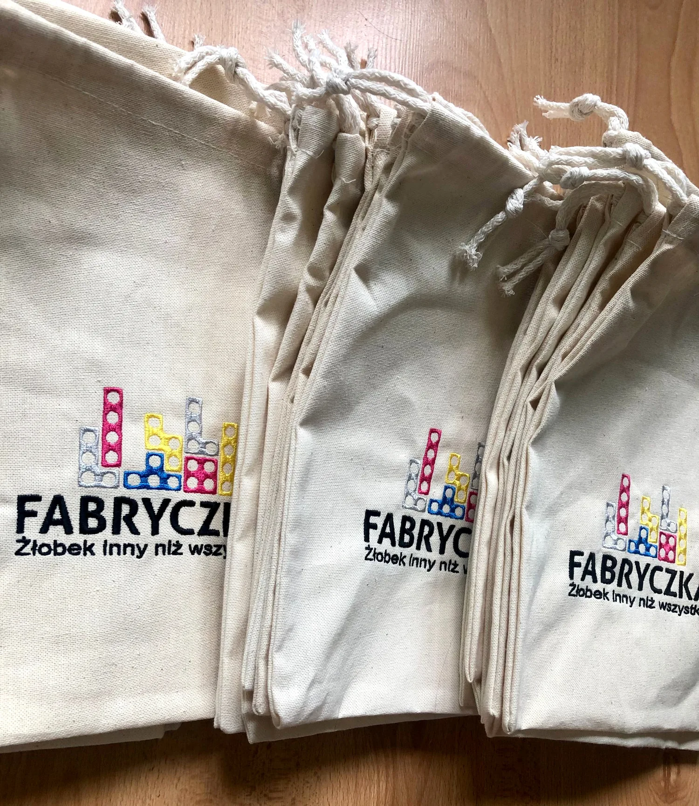
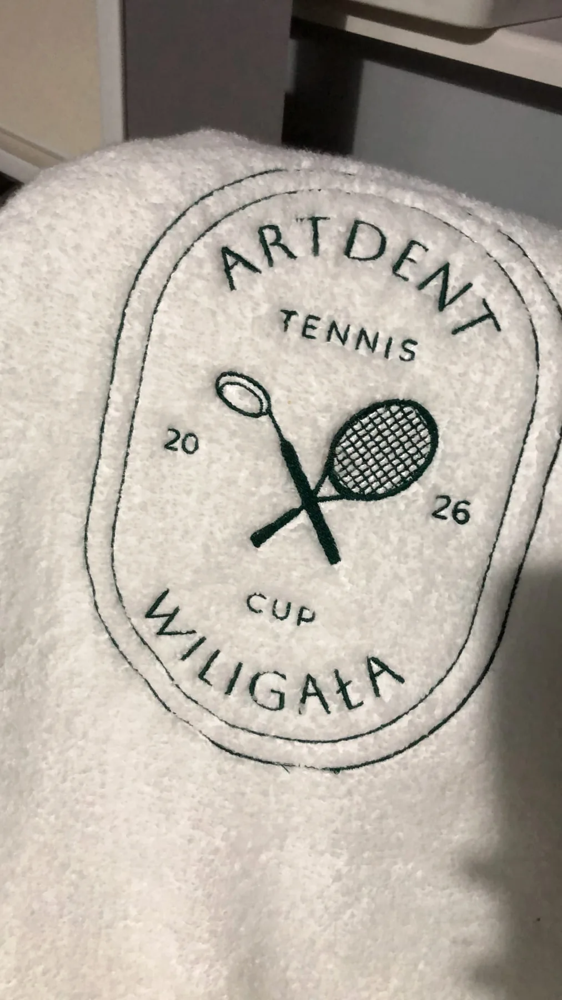

01 / B2B
Odzież firmowa
Haftowane logo na odzieży wykorzystywanej w firmie: ubraniach zespołu, odzieży zawodowej czy elementach identyfikacji marki. Dobieramy zakres haftu do projektu i materiału.
Zapytaj o tę usługę ↗Pomagamy znakować odzież firmową, tekstylia oraz drobne akcesoria. Każde zamówienie rozpatrujemy pod kątem wzoru, materiału i potrzeb klienta.
Zapytaj o możliwościPrzykładowe zastosowania. Dobór konkretnego materiału i sposób haftowania potwierdzimy po otrzymaniu zapytania.
Haftowane logo na odzieży wykorzystywanej w firmie: ubraniach zespołu, odzieży zawodowej czy elementach identyfikacji marki. Dobieramy zakres haftu do projektu i materiału.
Zapytaj o tę usługę ↗
Personalizacja akcesoriów firmowych oraz dodatków dla zespołu. Różne podłoża wymagają odrębnego przygotowania i oceny możliwości wykonania.
Zapytaj o tę usługę ↗
Oznaczenia dla firm, wydarzeń i organizacji na materiałach tekstylnych. Możemy także omówić produkty przeznaczone do wręczenia klientom lub pracownikom.
Zapytaj o tę usługę ↗
Imiona, dedykacje i pojedyncze motywy na wybranych tekstyliach. To dodatkowa część naszej oferty obok realizacji firmowych.
Zapytaj o tę usługę ↗Haft komputerowy pozwala trwale nadać tkaninie wyczuwalną strukturę nici. Nie jest drukiem: ściegi budują wzór, dlatego jego wygląd zależy również od rodzaju tkaniny i szczegółowości grafiki.
Pracujemy z rzeczywistymi projektami i pokazujemy ich fotografie bez cyfrowego wygładzania haftu. Dzięki temu możesz zobaczyć autentyczny efekt.
Jeśli masz własne logo, prześlij je do oceny — dobierzemy możliwy sposób wykonania.
Zobacz efekty naszej pracy ↗